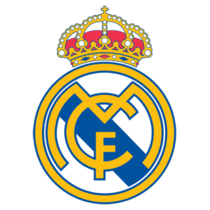

Historia
El Real Madrid Club de Fútbol, más conocido simplemente como Real Madrid, es una entidad polideportiva con sede en Madrid, España. Fue declarada oficialmente registrada por sus socios el 6 de marzo de 1902 con el objeto de la práctica y desarrollo del fútbol —si bien sus orígenes datan al año 1900,7 y su denominación de (Sociedad) Madrid Foot-ball Club a noviembre de 1901—. Tuvo a Julián Palacios y los hermanos Juan y Carlos Padrós como principales valedores de su creación.
|
Escudo

|
Titulo |
Cantidad |
| Uefa Champios League |
12 |
| Liga de España |
33 |
| Copa del rey |
19 |
| Mundial de clubes |
3 |
| Supercopa de España |
10 |
| Supercopa de europa |
4 |
|